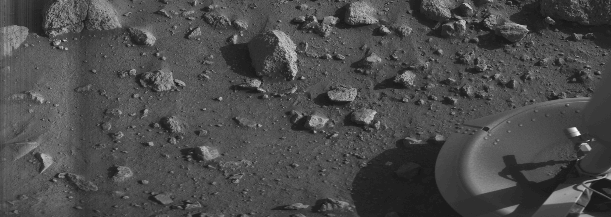

Let's face it. Mars has always fascinated us.
It took some serious technological advancements to seriously consider a visit to Mars, though.
Since the launch of the first attempted mission to fly by Mars in 1960
by the Soviet Union, there has been a multitude of further mission to
explore the red planet. While many of these missions failed, there
have by now been many successful steps to further our knowledge.
Notably, the first human product to land on Mars, the Mars 3 lander in 1971, sadly
lost contact to Earth only seconds after it landed and started to transmit. Also
in 1971, the first fully successful orbiter, Mariner 9, was deactivated after an
astonishing 516 days in Mars' orbit.
The first solid data transmission from the surface of Mars was brought to us
by the Viking 1 lander in 1975. This gave us the very first clear image
from the surface of the red planet - albeit in black & white.

Overall, 19 missions have successfully explored Mars and 8 exploratory sondes are still operational.
Of course, the most beloved of these are the famous Mars rovers, sturdy looking vehicles that
fearlessly explore the territory, sending home sme truly otherworldly imagery:

And it doesn't end here! The next missions are already being planned. The newest, Rosalind Franklin, will launch in July 2020!
While we wait, why not explore the surface of Mars yourself, using Google Mars: